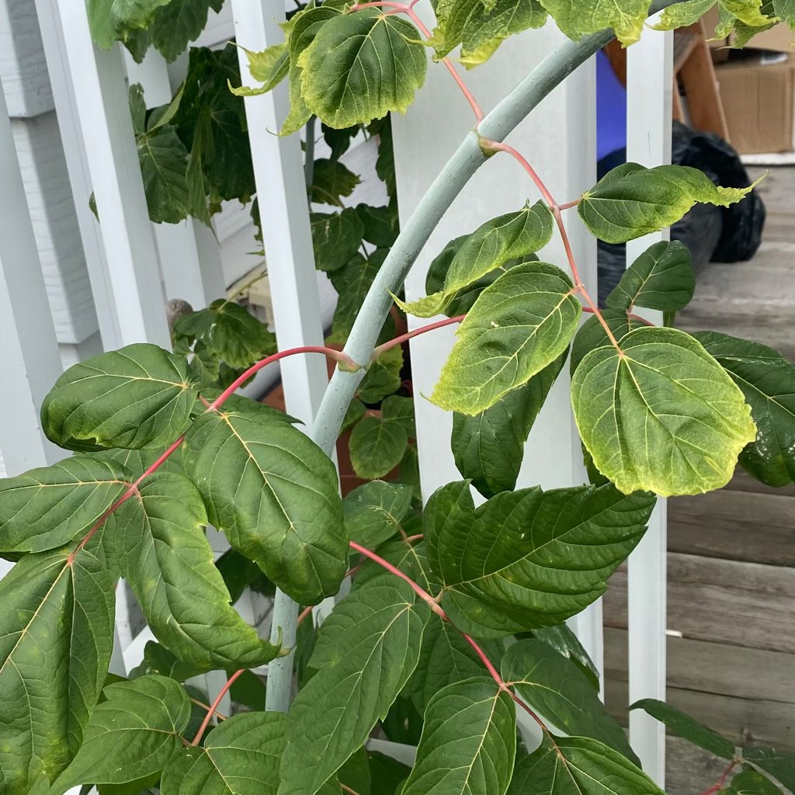

danni causati da erbicidi
Cosa stai osservando
Foglie deformate/arricciate con venature contorte, crescita stentata, clorosi e necrosi a chiazze. Spesso compaiono su più piante dopo lavori in giardino o vicino a prati trattati.
Descrizione
Effetti di erbicidi dovuti a deriva (gocce portate dal vento), contatto indiretto o substrati/compost contaminati.
È un problema reale o un evento naturale?
Problema reale; la gravità dipende dalla dose e dal principio attivo.
Possibili cause
Spruzzi portati dal vento, attrezzi/recipienti contaminati, compost/terriccio contaminati, riutilizzo di suolo di prato trattato.
Come confermare
Tempistica che coincide con trattamenti in zona; più specie colpite contemporaneamente; assenza di parassiti. I sintomi peggiorano per alcune settimane e poi si stabilizzano.
Cosa fare
1) Irriga abbondantemente per diluire eventuali residui e promuovere il drenaggio.
2) Rimuovi tessuti gravemente deformati; attendi la nuova crescita.
3) Evita l’uso alimentare fino a pieno recupero.
4) Se sospetti substrato contaminato, rinvasa in terriccio nuovo e pulito.
5) Evita ulteriori esposizioni; informa vicini/giardinieri.
Prevenzione
Non usare erbicidi vicino a ornamentali/orti; scegli giornate senza vento; non compostare sfalci trattati; pulisci accuratamente gli attrezzi.
Immagini
